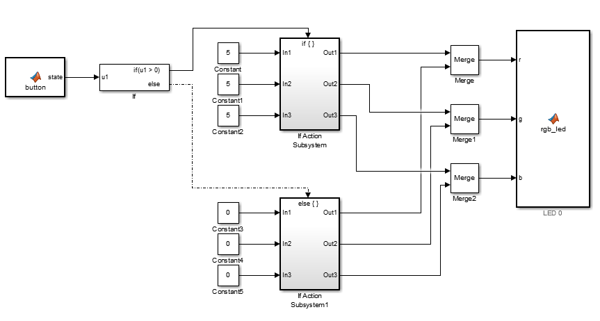

Using Button to turn on/off LED
This example shows to create a model that turn on the LED when the button is pressed.
Supported Hardware
- Engduino v1
- Engduino v2
- Engduino v3
Version for this example
The provided model is pre-configured with the Engduino v3 which uses the Arduino Lilypad hardware. Other version of Engduino is also supported.
Contents
Introduction
Simulink Support Package for Engduino Hardware enables you to create and run Simulink models on the Engduino board. The toolbox contains the modelling blocks for configuring and accessing, Engduino sensors, actuators and communication interfaces. In this example, you will learn how to create a Simulink model that uses the button to controls the led.
Prerequisites
We recommend completing the Getting started with Engduino Hardware tutorial
Model
The following figure shows the example model

Task 1 - Configure the model for Engduino Hardware
All the Engduino block is located in a file named engduino_driver.slx which is located in the Simulink Support Package for Engduino folder.
- Create a new Simulink script and save the model. Include the librarues and src folder in the toolbox to the folder that contains your script either by creating a link or simply copy and paste the two folders.
- In your Simulink model, click Tools > Run on Target Hardware > Prepare to Run....
- When the Configuration Parameters page opens up. set the Target Hardware parameter to Arduino Lilypad. Do not change any other settings.
- Click Apply.
Task 2 - Create a model for Engduino Hardware
In this task, you will create a simple Simulink model that lights up the Engduino's led when the button is pressed.
- Open the engduino_driver.slx file, which is located under example in the Simulink Support Package for Engduino toolbox folder.
- Copy the button block from the engduino_driver.slx file to your model.
- Open the Simulink Library Browser, navigate to Simulink > Ports & Subsystem
- Drag the If block into the model. Connect the button block to the input of the if block.
- In the Simulink Library Browser, search for if action subsystem block. Drag the block into the model.
- Double-click the if action subsystem block, look under the subsystem model, copy and paste the In1 to Out1 connection twice to create two more input and output.
- Locate the Constant block, which is under *Simulink > Commonly Used Block
- Drag and the constant block into the model.
- Double-click the constant block and set the Constant value to an integer in the range of 0-15. Choose any number other than 0.
- Click on the Signal Attributes tab, select Output data type as uint8.
- Click Ok.
- Copy and paste the constant block to create two more of them.
- Connect these three constant blocks to the inputs of the if action subsystem.
- Copy all three constant blocks and the if action subsytem block and paste it into your model. Change the value of all three new contant block to 0.
- Connect the first if action subsystem to the if block if part and the second if action subsystem to the else part of the if block.
- In the Simulink Library Browser, navigate to Simulink > Signal Routing, drag the Merge block into the model.
- Create another two more Merge block.
- Open the engduino_driver.slx file, copy the rgb_led block into your model.
- Connect the Out1 of the two if action subsystem block to the Merge block's input, connect the output of the Merge block to r input of the rgb_led block. The merge block will merge both signals coming from the if-else block into the rgb_led. Only one of the subsystem will be activated at one time.
- Perform the same step for inputs g and b of the rgb_led block. Reference the model above for the connection.
- Save your model.
Task 3 - Run the Model on Engduino Hardware
In this task, you will run your model on the Engduino hardware
- Connect the Engduino board to your computer with a USB Cable and turn on the Engduino.
- In your Simulink model, click the Deploy to Hardware button on the toolbar. The model will now be deployed to the connected Engduino hardware.
- Look at LED 0, the LED should light up with a colour configured by the r,g,b value you have just set when the push button is pressed.
Other Things to Try
- Change the colour of the led by changing the constant value.
- Instead of push button, use a sensor to activate the led.
Summary
This example showed you how to use Simulink Support Package for Engduino Hardware to control the led. In this example, you learned how to
- Use the push button to control led
- Create an if-else statement in Simulink